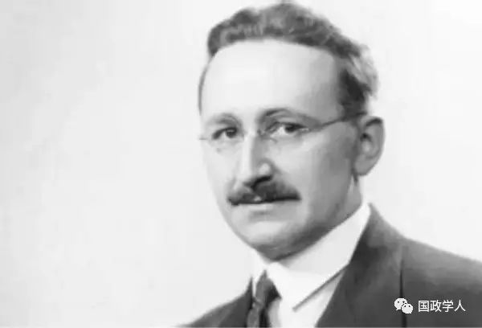
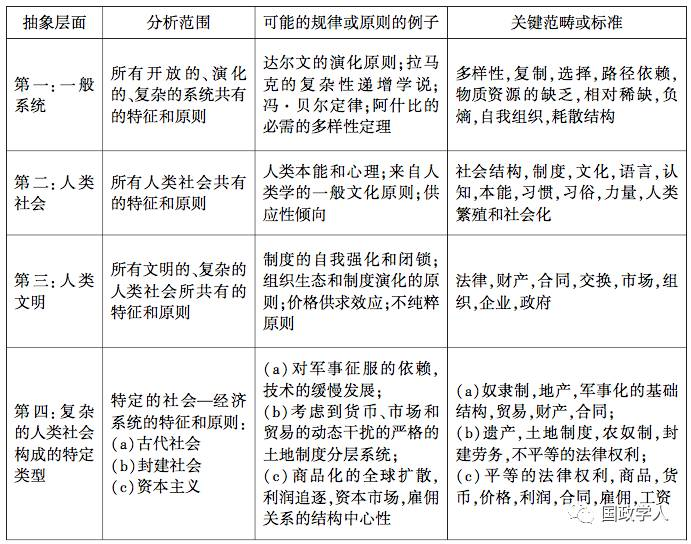
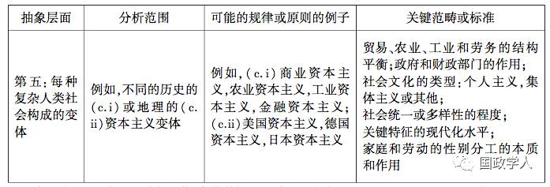

收录于合集

卢凌宇，华东政法大学政治学与公共管理学院教授，法学博士（外交学院），政治学博士（密苏里大学）。研究领域主要包括国家理论、生活质量、国内安全、国际问题研究方法论
【内容提要】 问题是科学研究的灵魂。 国际关系理论的“重要性”取决于研究问题的重要性。 国际关系问题的重要性既不与引用率、政策相关性等流行标准成正比，也不适用证伪主义、工具主义或科学实在论等科学哲学信条。 最重要的研究问题必须同时满足真实性和（社会）基础性这两个实质要件以及简约性和新颖性这两个形式要件。 其中实质要件中的真实性指必须对历史和现实中存在的现象或事件发问，基础性意味着研究问题要尽可能与最广大的人类群体的生存、发展和演化密切相关；形式要件中的简约性要求问题的时空外延尽可能大，而新颖性则强调问题提出的时序优先性。 国际关系学由于内生的基础性不足和简约性不够，很难提出能够辐射其他社会科学的研究问题，因此也难以产生社会科学的“ 元理论”。 为了增强国际关系学在社会科学中的重要性，首先要消除国内政治和国际关系的分野，绕开“ 无政府状态” 这个国际关系学的基本假定，运用外延更大的假定和概念来重构国际关系学。
【关键词】 研究问题；国际关系理论；重要性；社会科学评价
导论
国际关系学的理论与问题
国际关系学是以解释国际问题为导向的人类活动，其结果是国际关系理论。 作为一门社会科学，国际关系学的首要目的是促进国际关系知识的增长。 任何得到学术共同体承认的著作都为知识的增长做出了贡献。 尽管如此，不同的学术著作对知识增长的贡献呈现出巨大的差异，在学科发展史和整个人类思想史上的地位往往不可同日而语。本文认为，社会科学著作历史地位的差别主要取决于研究本身的“ 重要性（significance）”，而研究的重要性又直接取决于研究问题的重要性。正如卡尔·波普尔（Karl Popper）所言，一个理论对于科学知识增长所能做出的最持久的贡献，是它所提出的新问题。
如果说社会科学贡献的重要性取决于研究问题的重要性，那么研究问题的选择就成为从事重要研究的决定性因素。 理论是对问题的回答，是对复杂现实的抽象和普遍化，所以可以认为理论与问题是同构的。 蒂姆·杜恩（Tim Dunne） 等把理论分为五种类型。 第一种类型是解释性理论，旨在回答“ 为什么” 的问题，结果是按照时序提供关于事件起因的陈述。 第二种类型是批判性理论，其目的是批判包括理论在内的特定的社会安排和（或）结果，揭示这些安排是如何形成的。 第三种类型是规范性理论，关注社会政治的道德和伦理层面，旨在回答“应该怎么样”的问题。 第四种类型是构成性理论，致力于解决两种问题：一是事情（态）是怎么构成的，二是规范、规则和观念如何构成／影响社会客体。 第五种类型是提供观察国际关系的所谓视角（lense），不同于表现为“（逻辑）一致地、系统地构想和叙述某种关系的逻辑命题”这样的常规理论。经验社会科学主要生产解释性理论，规范理论不属于经验主义的范围，视角则不回答具体的问题，所以都可以排除在外。
相较于解释性理论，批判性理论的基础是检验导致某种特定事态的因素，所以，它与解释性理论之间没有必然的冲突。 构成性理论的第二种亚型在形式上接近于解释性理论：如果说前者是X建构Y，那么后者则是X影响/决定Y，可以统一于“X Fun. Y”这个公式。而且，构成性理论的第一个亚型可以转化为解释性理论或者构成性理论的第二个亚型。例如，对于“（当代）国家的基本特点是什么”的标准回答是固定的领土、一定规模的人口、政府机构和国际承认。 这个问题也可以转化“什么构成国家”，这就符合“ X Fun. Y”的公式。基于以上的分析，构成性理论或者是解释性理论的前提，或者是其结果，所以至少在形式上与解释性理论是可以统一的。
本文探讨的对象是经验性社会科学理论或问题的重要性。 这类问题的答案就是解释性理论、批判性理论或构成性理论。 从结构上讲，经验科学问题是由一个或超过一个自变量（X）和一个因变量（Y） 所形成的结构，可以表达为“Ｘ Fun. Ｙ”。Ｘ与Ｙ的逻辑关系有三种：正的、负的或者非线性的。 鉴于此，问题选择的难点并不在于提出关于Ｘ和Ｙ关系的假设，而是找出Ｘ和Ｙ本身。
与经验社会科学相关的研究问题有三种，即理论问题、经验问题和方法问题。对这三种问题的回答分别形成理论创新、经验创新和方法创新。严格意义上的科学理论必须是一个演绎陈述的系统。它不但应当能够解释现象，而且能够解释规律，同时具备可检验性。理论创新的形式包括提出新理论和发展现有的理论，进而改变或增进人类对社会现象的理解。方法创新是研究方法的进步或变化。经验创新则是对理论贡献的经验检验，可能是证实，也可能是证伪，或者部分证实。在当代标准社会科学研究中，理论创新几乎总是与经验创新相伴而行。在国际关系学中，没有通过经验验证的理论创新很难有机会发表，当然也就没有机会作为制度化的知识留存下来。
应该说，不同类型的问题适用于不同的评价标准，因而不具备可比性。 例如，我们无法区分下述两个问题哪个更重要：石油资源如何影响中东地缘政治和选择性偏差，如何影响经验分析结果。 尽管如此，在这三种创新中，理论创新是第一序列的贡献，方法创新和经验创新则属于第二序列。 科学的终极目的是增进人类对世界的认识，为此我们需要理论这种观察和理解世界的工具。 相比之下，方法创新和经验创新都服务于理论创新。 研究方法的采用取决于研究问题的性质，经验研究的目的则是检验理论猜想。 另外，经验创新经常是数据更新或方法改进的结果。 例如，在回归分析中，运用时间序列分析与否得出的经验结果可能大相径庭。在经验上，国际战争之后可能是持久和平，也可能在短暂的休战后重新开战，因此很有必要探讨是什么原因导致战后和平的持续时间有长有短。 然而由于这类问题的因变量是时间间隔，违背了线性回归的基本假定，导致无法应用线性回归方法。 后来国际关系学引进了医学上常用的事件历史分析（event history analysis），这类问题的量化分析才有了较为恰当的工具。 本文仅着眼于对理论问题的评估。
从操作程序上看，标准的社会科学研究包括问题设置和问题回答两部分，前者的功能是提出问题，后者则旨在建构和检验理论。 严格地说，理论建构和经验检验都是技术性的，而问题选择则兼具技术性和艺术性，体现了社会科学研究科学性和艺术性的统一。科学与艺术的一个根本区别在于艺术创作没有固定的程序可以遵循，因此，关于什么样的研究问题可以谓之“ 重要”，学者们并没有提出可操作的衡量标准。 张五常甚至认为研究问题的重要性是难以度量的，即使做出重要贡献的研究者在事前也预测不了自己研究的价值，比如很多自视甚高的研究很快淡出人们的学术视野。 相反，少数在发表之际很不起眼的无意插柳之作，多年之后跃升为经典，其中最具代表性的案例是罗纳德·科斯（Ronald Coase） 发表于1937年的《 公司的性质》，当时无人问津，近30年之后才博得大名，其交易成本理论成为整个制度经济学的基础。
时间这个指标固然易于度量，但所谓经历时间的检验是就结果而言的。 本文拟立足于国际关系学，对经验社会科学研究的重要性这一问题做出一种事后的推理和回答。
2
社会科学评价中的“ 重要性”
从科学哲学视角来看，重要性属于科学评价的范畴。在国际关系学中，这是很少涉猎的问题领域，迄今为止可能还缺乏系统的探讨。在中国国际关系学界，唐世平认为“重要”的问题有三类：一是实证社会科学中的冲突与合作以及政治实体的兴衰这两个“永恒的问题”；二是社会科学哲学的本体论、认识论和方法论；三是“ 不得不写的问题”，主要是针对学术界本身的学术批判。后两种问题显然不属于经验科学，故不在本文考察之列。本部分将首先简要地评述引用率、政策相关性和政治正确性等三个指标，再探讨三个广为接受的科学哲学标准。
1
引用率
引用率是最常用的科学评价标准。 高引用率往往意味着一定时期内较大的学术影响。 然而，甚至从短期来看，研究的重要性与引用率之间也呈现既非充分也非必要的关系。追赶时尚是国际关系学的一个特点：20世纪70年代风行新自由主义、比较外交政策和政治心理学，20世纪80年代流行批判理论、后现代主义和女性主义，20世纪90年代则有建构主义崛起。 尽管如此，跟风而上的研究往往难以产生厚重的积累，反而可能导致国际关系学者间尖锐的对立。
应该承认，从长时段来看，引用率是评价社会科学重要性的一个有效的标准：发表30年后尚被引用的著作算是“小贡献”，发表50年后尚还“活着”的是“大贡献”｡比如，在当代国际关系学家中，肯尼思·华尔兹（Kenneth N. Waltz）、罗伯特·基欧汉（Robert O. Keohane）､罗伯特·杰维斯（Robert Jervis）和亚历山大·温特（Alexander Wendt）的学术成就就很有希望成为“大贡献”｡ 在20世纪中叶的美国政治学界，哈罗德·拉斯韦尔（Harold Lasswell）是声名卓著的界碑式人物。他不仅著作等身，还曾经担任美国政治学会主席，是“政策科学（policy science）”的主要倡导者，与美国政府高层也有着密切的联系。拉斯韦尔在世时，其学术和政治影响盛极一时，远远超过半个多世纪以来的所有国际关系学家。拉斯韦尔于1978年去世。在去世前17 年，他的著作被引用了200多次。鉴于当时美国政治学共同体的规模远不如今天，这个引用率是相当高的。但在他去世17年后，被引用的次数却只有70次。至于他自视最高的关于政策科学的两本著作，则乏人引用。更重要的是，他的等身著作几乎失去了政治科学发展的影响，很少被提及，更没有人去与之对话和交流。到了今天，拉斯韦尔除了在公共政策领域还保留了一些日渐衰落的残余影响，基本已无人问津。类似地，在国际关系学的顶尖学者中，曾经盛极一时但最终乏人问津的学者绝非少数,比如被马丁·格里菲斯（Martin Griffiths）列入“国际关系五十大思想家”的雷蒙德·阿隆（Raymond Aaron）、乔治·凯南（George Kennan）、查尔斯·贝茨（Charles Beitz）、特里·纳丁（Terry Nardin）等｡
2
政策相关性
理论上的重要性也不等于高度的政策相关性。最重要的问题未必是一个时代或者国家所面临的最迫切问题。例如，钱颖一指出，虽然近40年来中国的改革开放让全世界瞩目，但是“中国问题本身并非是重要经济学问题的充分条件，当然也并非必要条件”。要做出有影响的研究，必须选择中国经济中的“重要问题”。尽管如此，理论上的重要性与政策上的迫切性也并非截然对立。一方面，理论研究并不是为了直接产生政策影响，但有助于“理清思路、建立框架、聚焦问题”；另一方面，重大的政策问题能否转化为重大的理论问题，有赖于事件本身的性质以及学者的抽象思维能力。W. 菲利普斯·夏夫利（W. Phillips Shively）令人信服地探讨了政策研究和理论研究的相对重要性：前者直面“迫切”的问题，而所谓“紧迫”只是主观判断；后者则必须具备广泛而普遍的适用性——“这不仅指它所论及的现实事实的范围，而且也是指它影响既有理论的深度”。
正因为如此，那些直接影响了政府行为的对策报告在学术思想史上的地位往往远不及阳春白雪的研究，其重要性不如那些受众很小的理论著述。 兹比格涅夫·布热津斯基（Zbigniew Brzezinski） 和亨利·基辛格（Henry Kissinger） 都是学者型官员，分别担任卡特政府的国家安全事务特别助理和尼克松政府的国务卿。 他们都是古典现实主义者，显著地影响了那个时代的美国外交政策，尤其是美国对华政策。 然而，要论学术影响，他们远远不如华尔兹、基欧汉和温特，甚至也不如布鲁斯·布恩诺·德·梅斯奎塔（Bruce Bueno de Mesquita） 和詹姆斯·费伦（James Fearon） 这些后起的理性选择主义者。 回溯到1946—1947年，乔治·凯南的八千字电文和发表于《外交政策》杂志的《苏联行为的根源》一文改变了国际关系的走向，但到了今天，除了研习冷战起源的学者之外，该文很少再被引用，也几乎被排除在国际关系学的基本篇目之外。 保罗·安维（Paul Avey）和迈克尔·德西（Michael Desch）的经验研究表明，美国学院派国际关系学者和外交决策者对于学术著作有着很不相同的评价标准和偏好。 对于学院派学者而言，半个世纪以来最有影响的前五位作者依次为温特、基欧汉、华尔兹、约翰·米尔斯海默（John Mearsheimer） 和费伦；而外交决策者排序的前五位则依次为约瑟夫·奈（Joseph S. Nye）、塞缪尔·亨廷顿（Samuel P. Huntington）、基辛格、弗朗西斯·福山（Francis Fukuyama） 和布热津斯基。
3
政治正确性
重要性也不等同于政治上的“正确性”。科学发展的历程是通过理论的竞争和选择来实现的。这是一种类自然选择，选择的主体是科学共同体：“通过这种选择的机制，使得科学中各种相互竞争的理论，优胜劣汰，适者生存”。当然，理论的流行既可能是学术共同体的文化选择，也可能是政治选择，或者是两者共同作用的结果。在特定时空环境下受欢迎程度很高的理论往往符合政治正确的标准。 张五常指出，无论约翰·凯恩斯（John M. Keynes）宏观经济学在二战后的流行，还是米尔顿·弗里德曼（Milton Friedman）新自由主义经济学思想在里根时代的崛起，都是社会思想适应了当时政治需要的结果，是时代造就了思想史上的英雄。相反，“不合时宜的思想怎么精彩也会被埋没的”。
相较上述三个流行的尺度，国际关系学家在评价理论重要性的时候更多地使用科学哲学的标准。 最符合人类直觉的科学哲学标准是证实主义。但是，以波普尔发表于1959年的《科学发现的逻辑》为起点，证实主义作为科学评价标准已经逐渐为主流学术界所放弃。按照梅斯奎塔的转述，如果某一类事件的数量是无限的，那么任何有限数量的经验证据所提供的支持都不是结论性的，所以在事实上无法证实任何此类命题。鉴于此，本节忽略证实主义，只讨论影响最大的证伪主义、工具主义和科学实在论。
4
证伪主义
社会科学中最广为接受的理论评价标准是证伪主义。波普尔指出，“ 具有可证伪性而没有被证伪的理论是可以接受的”。证伪主义有三种类型：一是所谓僵化证伪主义（dogmatic falsificationsim），即一个单一的反例就可以否证一个理论。 二是天真方法论证伪主义（naive methodological falsificationsim），即虽然一个理论在逻辑上是难以证伪的，但如果它达不到统计检验所需的“显著性”标准，该理论就应该被放弃。这个标准的实质是概率主义。三是复杂方法论证伪主义（sophisticated methodological falsificationism），即除非出现替代性的、更强大的理论，我们不应该放弃一个理论。
梅斯奎塔支持复杂方法论证伪主义。在他看来，僵化证伪主义的不足之处在于其不断的推倒重建会导致无法积累科学知识。在科学史上，“几乎所有重要的理论在产生之初，差不多都面临着否证它的各种各样的反例甚至反常。 而科学理论或研究纲领有着巨大的韧性，能够顶住反例的压力，甚至包容反例”。相比之下，朴素方法论证伪主义的缺点在于容易犯统计上的“ 一型”和“ 二型” 错误，即拒绝正确的猜想或者接受错误的猜想，两者共同的不足在于只关注知识增长的断裂性而忽视了其连续性。相比之下，精致证伪主义则具有较强的建设性。 它强调证伪本身并不能促进知识的增长或进步。 科学批判和评价的重点在于切实地促进知识的增长。
精致证伪主义也是当代社会科学哲学和国际关系学界的主流观点。 精致方法论证伪主义在科学哲学界的代表人物是伊姆里·拉卡托斯（Imre Lakatos）。 拉卡托斯认为一个成熟的假说或理论要满足如下三个条件：一是能够合理地说明原有理论所能解释的那些事实或假象；二是能够解释新发现的而为原有理论所不能解释的那些事实和现象；三是能够明确地预言尚未发现的事实，为进一步提供检验假说提供可能性。
值得一提的是，拉卡托斯科学研究纲领的参照系是自然科学尤其是物理学，所以对于包括国际关系学在内的社会科学来说很严酷。 按照这个标准，没有任何国际关系理论是科学的。 基欧汉进而建议采纳一种“ 更宽泛的、更具解释力” 的评价标准。实际上，不仅社会科学，自然科学甚至物理学的某些子学科也无法同时满足拉卡托斯设定的三个条件，比如关于天体演化的各种假说：“ 如果仅以上述三条作为评价理论的合理性和选择理论的标准，那将是既不相宜又不可行的。” 而且，在一些情况下，某些假说正是由于与已发现的事实相矛盾，才具有了更高的价值，比如德米特里·门捷列夫（Dmitri Ivanovich Mendeleev） 的元素周期律。 不仅如此，拉卡托斯本人也坦言，我们几乎无法确定要经历多少时间的等待才能认定一个研究纲领已经退化到了不能发现新颖现象的地步。 同样地，我们也很难断定两个对立的纲领哪个更好。这样的评价只能是事后的。
鉴于拉卡托斯设定的标准过于苛刻，国际关系学者对于科学研究纲领方法论的应用往往是不完全的，“断章取义”或者篡改标准的情况很普遍。例如，梅斯奎塔认为预期效用理论（expected utility theory）不仅解释了国际战争发生的原因，而且实现了三个超越：一是整合了先前的理论；二是解释或说明了新颖的或附加的事实；三是获得的经验支持更多。例如，预期收益理论证伪了基辛格“ 均势导致战争发动（initiation）”的观点；伦道夫·塞文森（Randolph Siverson）和乔尔·金（Joel King）提出第三方会有可能参与正在进行的国际战争，而梅斯奎塔及其合作者则深化了他们的理论，指出预期收益是决定第三方是否会参战的决定性影响因子。但是，该理论的批评者直言不讳地指出，梅斯奎塔等人对证伪主义的理论评价标准进行了偷梁换柱，比如把用于比较研究纲领的标准用来比较竞争性的理论。 如果参照经典的科学哲学标准，预期效用理论并不比它的对手理论更进步。
5
工具主义
工具主义推崇预测，由弗里德曼最先给予了系统论证和阐释。弗里德曼工具主义的要点有三个：一是科学的目的是预测，结果是提出预测范围广且准确的理论；二是理论的基本假定不必是真实的，合格的假定必须有助于演绎出预测力强的理论；三是理论必须是简约的，要能够以“较少解释较多”。一个理论如果比现存理论更能准确地预测到未被观察到的现象，它就是更好的理论。预测的对象既可以是尚未发生的现象或事件，也可能是已经发生但并未被发现和阐释的现象或事件。半个多世纪以来，弗里德曼的工具主义已经成为经济学和政治学研究的主流认识论，对于社会科学研究的数量化起到了难以估量的推动作用。
工具主义与证伪主义是兼容的：一种理论的假设或推想如果没有能够被事实所支持，也就是被证伪了。 弗里德曼特别指出，预测的对象并不只是未发生的事件，也包括已经发生但未被辨明的事件。 在国际关系学中，汉斯·摩根索（Hans J. Morgenthau）、米尔斯海默和基欧汉等都把预测视为国际关系理论的重要评价标准之一。后文将要详述，工具主义的弱点在于无法避免“假问题” 的出现。
6
科学实在论
科学实在论与弗里德曼的工具论针锋相对，具体而言也有三个原则：第一，科学旨在解释现象或事件。现象或事件必须存在于真实世界，可以是发生过的，也可以是正在发生的。第二，理论的假定必须是真实的。假定的理想状态兼具真实性和可操作性，但在无法两全的情况下，真实性优先于可操作性。第三，简约性不是理论选择或评价的标准。 凯恩斯和科斯都认为社会科学的主要目的是解释而非预测。 科斯尖锐地指出，弗里德曼的工具主义虽然名曰实证主义方法论（methodology of economic positivism），但实际上却是规范理论，因为没有经济学家愿意仅仅去检验别人的预测，也没有期刊愿意刊登这样的纯粹经验研究。在他看来，经济学理论主要是“ 所谓的纯理论，构成了基于有关人类本性的假设的逻辑框架”。科斯转而建议理论建构要“使我们有能力组织自己的思想，从而对我们理解正在发生的事情有帮助”，这样的理论优于“能很好预测但不能提高我们对体系运行的洞察的理论”。在他看来，弗里德里希·冯·哈耶克（Friedrich von Hayek）关于经济体系运行的构想，凯恩斯的有效需求分析都是这样的思想。在国际关系学界，华尔兹的观点较为接近科斯式的科学实在论。他认为理论的解释能力远比预测能力重要。比如，进化论并不预测，但却有着难以置信的解释能力。
作为一个广为接受的科学评价标准，证伪主义与工具论、科学实在论存在两个显著的区别：第一，证伪主义经常被用于比较研究纲领或范式，而不是单个的理论，至少在国际关系学中是如此。按照理论的规模和抽象程度，科学哲学家把理论分为两种：一种是具体理论，即能用来做出具体经验预测和对现象给出详尽说明的一组非常具体而相互联系的学说；另一种是研究传统，是“ 远为更一般、更不易检验的一组原则或假说”，其目的在于为具体理论的建构提供方法论和本体论的指导。这里的研究传统类似于拉卡托斯研究纲领中的“内核”。 对于研究传统的评价有两个：一是即时性评价，着眼点是“评价研究传统的即时合适性如何，即解决问题的有效性”；二是合适性评价，即考察“与不同的传统相比较，研究传统的进步性如何”。虽然研究传统本身“既不能用于说明，也不能用于预测”，甚至也“不是直接可以检验的”，但对研究传统的评价则是通过对传统之下具体理论评价的加总来实现的。例如，约翰·凡斯奎兹参照拉卡托斯的标准，认定现实主义是退化的研究纲领，其中两点主要的指责就是现实主义的附加命题或事后解释“ 不产生任何新的（理论）事实，也没有新的经验内容” ，同时整个纲领“ 缺乏强有力的经验发现来支持” 。 这个评价折射出当代社会科学评价的着眼点是理论群、范式、纲领，而非个别的理论。第二，证伪主义的立足点是具体范式或纲领之下知识的“ 进步” 或“ 增长”，而进步或增长是相对于最近的知识存量而言的，也就是衡量知识的边际增长。 在现实主义研究纲领中，新古典现实主义代表了现实主义研究纲领最新的发展。 托马斯 · 克里斯腾森、兰德尔 · 施维勒、威廉·沃尔弗斯和法里德·扎卡里亚等学者试图把华尔兹的结构现实主义理论发展成外交决策的现实主义理论。为此，他们导入决策者的知觉和国家能力这两个变量，提出决策者对国际体系中相对物质力量的知觉以及国内政治结构所决定的国家汲取能力会显著地影响国家间关系。相较于古典现实主义和结构现实主义，新古典现实主义理论要深入和精致得多，对于现实主义范式下的知识增长做出了很大的边际贡献，但不能据此认为新古典现实主义比华尔兹的思想更重要。
与此同时，证伪主义、工具主义和经验主义具有两个重要的共同点：第一，关注的焦点是理论的真实性而非问题的真实性。 实际上，问题的真实性并不等于理论的真实性。“朝鲜半岛为什么会分裂” 是个真问题。“冷战初期的大国均势政治导致朝鲜半岛分裂” 则是对上述问题的一个回答，是个理论命题，其真实性则取决于是否得到经验检验的支持。第二，科学评价中的经验主义，即以理论与经验事实的契合作为判断理论的价值准绳。 具体而言，证伪主义强调理论不能与经验事实相违背，工具主义认为理论要能够预测到事实，而科学实在论则指出理论要能够解释事实。 在凡斯奎兹和华尔兹等关于现实主义研究纲领退步性的争论中，现实主义者们坚持认为是凡斯奎兹曲解了经验事实， 因为现实主义理论既能解释旧事实， 又能解释新现象。
综上所述，三个科学哲学标准都致力于评价理论而非问题的重要性。尽管如此，它们对于判断研究问题重要性仍然有着重要的启示：第一，理论与问题是同构的，但理论的真实性并不等于问题的真实性。同一个问题会有不同的答案，进而生成不同的理论。这些理论的重要性如何，只有在问题真实的前提下才有意义。 从这个意义上讲，问题的真实性才是第一序列的价值。 第二，证伪主义和工具主义虽然侧重点不同，但都强调理论要解释尽可能多的事件或现象。证伪主义要求一个成熟的假说既能解释原有理论能够解释的现象，又能够解释原有理论不能解释的，同时预言尚未发生的事实。 工具主义则强调较广范围内预测的准确性。 这里的“ 范围”既指尚未发生的事实，又包括已经发生和正在发生的事实，所以，“ 以较少解释较多” 的理论显然是简约的，内涵小而外延大。 第三，华尔兹无疑是最重要的国际关系理论家之一。 虽然克里斯腾森这样的新古典现实主义者为现实主义研究纲领的发展做出了巨大的边际贡献，但即使从直觉出发，也不会有人认为克里斯腾森的理论贡献比华尔兹重要，其中一个显而易见的原因就是华尔兹是新现实主义的奠基人，而克里斯腾森等后起之秀只不过是丰富和发展了他的原创理论。 换言之，华尔兹是原创性理论家，具有时间上的优先性。
更重要的是，科学哲学的本体论和认识论都基于自然科学尤其是物理学。 自然科学是价值中立的。 光、电、氢氧化合反应、细胞损害、遗传变异这样的现象和过程对于人类的不同群体和个人的影响是均质的，任何人类群体和个人都无法逃避。 相反，社会科学的研究对象是广义的人际关系。 不同的人类群体和个人可能面临非常不同的关系结构。 用秦亚青的话来说，由于波普尔等的研究对象是自然界，所以他们的“ 问题不具有社会文化性质，无需经过社会意义网络的建构”。以国际关系为例，对于处在不同时空背景下的不同人群来说，霸权兴衰、经济制裁、国际金融危机、经济增长、难民潮这样的现象和事件具有完全不同的利益相关性。普通美国人可能从来没有遭受过经济制裁所导致的物资匮乏和社会动荡；莫桑比克人无法体会德国人和法国人正在经历的福利国家危机；布丹身处喜马拉雅山麓，相对与世隔绝，所以无论是1929 年大危机、1973—1974年石油危机，还是2008年美国金融危机，对它都几乎产生不了冲击，对于大国国运至关重要的霸权兴衰也与这个国家没什么关系。 不过，经济增长则是所有主权国家都必须面对的问题，也与群体和个人的福祉休戚相关，对于那些身处资本主义世界体系的国家而言尤其如此。换言之，相对于经济制裁这样的国际关系事件，经济增长关联到更多的人群，因此具有某种不可替代性或“基础性”。
3
国际关系问题的重要性

根据以上的分析，本文把国际关系问题的重要性归纳为两类四个标准：一是实质要件，包括问题的真实性（truth） 和基础性（fundamentality）；二是形式要件， 包括问题的简约性（parsimony） 和新颖性（originality）。 实质要件和形式要件的区别在于对于前者的判断需要高度专业化的知识， 而后者的判断工具则是形式逻辑常识。在实质要件中，真实性指研究者必须对历史和现实中存在的现象或事件发问，基础性意味着研究问题要尽可能与最广大的人类群体的生存、 发展和演化密切相关。在形式要件中，简约性要求问题的时空外延要尽可能大，而新颖性则强调问题的时序优先性。
1
真实性
没有真问题，也就不可能有真学问。哈耶克强调真问题是社会科学研究的出发点，认为理论科学和历史科学的经验基础必须是“从现实世界中选择出来的某些方面”，而科学本身只不过是“把这些方面纳入有逻辑关系的规则体系“。
真实的研究问题有两种：一是问题的因变量在历史上存在过或者在现实中存在；二是自变量与因变量的关系在历史上存在过或者在现实中存在。 经验科学中的“ 假问题”则主要有三种类型：第一种是应然的或者面向未来的问题。 比如近年来对国际政治经济新秩序的探讨。 以世界经济秩序为例，尽管冷战后美国的军事和经济实力所占全球军事和经济实力的比重持续下降，但它对国际政治和经济格局仍然具有压倒性的影响。 美国占有世界银行投票权的16.4％，按照世界银行的章程，所有重要决议都必须获得85％以上票数的支持，所以世界银行仍然处于美国的控制之下，再加上美元难以撼动的世界通货地位，美国仍然牢牢地控制着世界经济秩序。 如果以这两个事实为标准，那么断言国际经济新秩序已经建立起来就是在制造假问题。 第二种是时空错位所产生的问题。 例如，中华人民共和国甫一建立，就面临着捍卫国家领土主权的巨大挑战。 但是，对于同一时期的几乎所有非洲国家来说，“ 捍卫国家主权”就是个假问题，因为大多数非洲国家直到20世纪60年代初才通过大规模殖民化获得了独立。 第三种是只在逻辑上存在的问题。 如果说第一种和第二种类型的问题表现为因变量不真实，较易识别，那么第三种类型问题的特点则是自变量与因变量关系不真实的结果，在经验上难以识别，但它恰恰是西方国际政治科学普遍存在的问题。这类问题往往出现在大样本经验研究中，其理论建构或者是通过形式模型，或者是文字推理，但一个显著的特征是通篇没有一个确凿的案例来说明自变量和因变量之间存在过因果或构成关系。
第三种问题的滋生和蔓延是工具主义成为主流的社会科学认识论的结果。与之相应，实证主义方法论是当代西方主流政治学和经济学的指导思想。 理论建构的方式可以是归纳或演绎，但弗里德曼及其追随者推崇演绎的理论建构路径。 演绎的本质是逻辑推理，在形式逻辑正确的前提下，猜想的正确性取决于前提的真实性。但是，弗里德曼认为假定不必是真实的，甚至越远离现实越好。这个洞见在科学哲学上导致了巨大的争议。实际上，弗里德曼的批评者忽略了实证主义方法论成立的隐含前提，那就是经验检验有能力证伪不真实的推论。 从逻辑上看，不真实的前提可能推演出真实或不真实的推论；真实的推论会通过经验检验而不真实的推论会被经验检推翻。 有了这个前提，理论的假定确实不必是真实的；只要理论猜想得到了经验检验的支持，那么问题本身就一定是真实的。
不过，观念先行和数据操纵是社会科学普遍存在的问题，导致难以从“ 证据” 本身来判断研究问题的真假。同时，华尔兹在反驳凡斯奎兹的批评时深刻地指出，实证主义强调现象要符合理论预测。 但是，对于什么可以被用作支持或否定某个理论的证据，并没有定论。 凡斯奎兹认为二战前的国际关系史证伪了华尔兹的均势理论。但是，华尔兹反驳说经验检验有时候是很不确定的事。 例如，一些国家试图在战前实现均势，但均势实际上是在战争结束的时候才终于形成。 此外，可否把推迟均势形成的事实视为反驳均势理论的证据呢？ 这样的问题很难断然回答。冷战的和平结束被普遍认为证伪了结构现实主义理论。 但是，华尔兹并不承认这点。 他指出，要检验民主和平论，一方面有赖于如何定义“ 民主” ，另一方面，对于“ 民主国家之间不打仗” 这个命题，现实主义也能够提供充分的解释，所以并不能据此认为结构现实主义失败了。冷战的结束并没有显著削弱华尔兹的学术影响。 在当代美国学院派国际关系学者眼中，华尔兹不仅是排名前三的顶尖国际关系学家，其影响力也保持在前五位。
如果说结构现实主义是被证伪但仍然不失其重要性的国际关系理论，那么奈的软实力理论则很可能是难以证伪（irrefutable） 的国际关系理论。 迄今为止，国际关系学者对软实力影响的评估还停留于少量定性分析。软实力的本质是文化吸引力，而吸引力是很难直接操作的。这是软实力理论难以在经验上被反驳的重要原因。 但也恰恰由于这个原因，我们很难测度软实力的外部有效性。 奈高度评价外国留学生是美国的软实力发挥作用的重要渠道，认为“ 对于我们国家来说，那些曾在这里受过教育的未来世界领导人们的友谊是最宝贵的财富，我想不出比这更有价值的东西，国际学生通常会怀着对美国价值观和制度颇为欣赏的态度回国”。他进而指出：“一些早期来美国的苏联留学生最终成为执掌大权的官员， 他们在苏联解体中扮演了重要角色。” 他的这些洞见确实很符合人类的直觉，然而迄今为止并没有获得普遍的经验支持。
小马修·霍顿（Matthew Holden, Jr.） 在总结20世纪后半期政治科学的发展时评论道，这个学科最深刻的变化发生在方法（论） 领域。 政治学的进步在很大程度上是由方法驱动的，其代价则是妨碍了那些不适用先进、复杂的定量和数学方法的问题的研究。华尔兹在论及美国政治学的现状时也指出，量化工具的盛行使政治学研究日益偏离重要的问题。 权力和国家间关系这样的真问题的受重视程度因此下降了。 有些问题在政治上并不重要，但由于便于运用数学和其他形式方法求解，于是就变成了政治问题。
实际上，假问题不仅存在于定量研究中，在定性研究中也不罕见。从理论上讲，历史叙事既是理论建构的源泉，又是经验检验的试金石。然而，不容忽视的是，政治学家对历史叙事的使用往往存在着严重的选择性偏差。原因在于：历史学家也有着隐含的价值导向和理论取向，所以其叙事并不完全忠实于历史。相比那些理论和价值中立的定量分析数据，历史叙事的误导性可能更强，并且更加难以被发现。具体而言，政治家的历史叙事选择存在“按照因变量选样偏差” ，即倾向于选择符合自己的基本假定和理论观点的史学著作，而不是相反。 小巴林顿·摩尔（Barrington Moore,Jr.）的《专制和民主的社会起源》一书是比较政治和政治文化研究的经典之作该书中，摩尔把英国内战描述为一场资产阶级革命。 伊恩·拉斯蒂克（Ian Lustic） 的研究表明，摩尔的经验论据严重贬低了宗教信仰的作用。 作为摩尔论点经验支持的史学著作在该书的写作过程中就已经被英国史学界边缘化，但摩尔对此视而不见，只字不提。
唐世平认为，“ 一个科学家最幸福的莫过于有几个重要问题在想，而最终能够解决其中的一个或几个问题” 。根据上述分析，我们可能要承认，国际关系学家其实没有能力解决问题。 这也是华尔兹的洞见。 他强调“ 理论并不是现实的反映，而是解决现实某一被圈定部分的工具，至于其真实的界面是什么，我们永远无法确定”，“ 无论理论的评价如何彻底，我们都无法确认理论是真的”，所以，科学“ 最重要的进步不是判断理论是真的或假的，而是理论是否值得认真对待”。也就是说，社会科学家找不到问题的真正答案，也解决不了任何问题，充其量只能提出真问题。 关于何谓真问题，可以借用罗西瑙检验（Rosenaus Test） 的标准，即给出一个问题的真实案例。这样可以确保某个理论至少能够解释一个事件。在国际关系学中，这样的案例往往需要通过比对不同来源的外交决策解密档案才能确定其真实性。例如，贸易和平论有三个基本假定：一是国家从贸易中获益；二是战争会破坏贸易；三是决策者在前两者的基础上权衡战争与和平的成本和收益，做出理性选择。诺林·莱普斯曼（Norrin Ripsman） 和基恩—马克·布莱查德（Jean⁃Marc Blanchard） 通过对1914年七月危机和1936 年莱因危机的深入个案研究发现，德国领袖对贸易的关注即使不是没有，也是微乎其微，政治生存才是重中之重。 这就在微观层面上否定了贸易和平论的第三个基本假定，质疑了基于这个假设的所有理论建树和大样本经验发现。
2
基础性
理想的社会科学应当以问题为导向，而问题应当“ 在充分了解现状的基础上激发关于现实的新想象” ，并为现实注入活力。 加里·金（Gary King） 等为政治学问题选择
提出的两个建议体现了这个要求：一是研究问题必须在现实世界具有“ 重要性”，即对政治、社会或经济生活均产生较大的影响（consequential）；二是对问题的回答会给一支 “可辨析（identifiable）”的文献做出实质性的贡献。华尔兹在评价美国国际关系学的现状时指出，学者们过于注重对学术文献做出贡献而忽略了研究问题在现实世界中的重要性，过多地关注政治上不重要的（insignificant） 问题。
金等所说的“ 重要性” 显然并非问题的真实性，而是类似于华尔兹所谓的在现实政治中“起作用的基本因素”。类似地，林毅夫在论及经济学问题的重要性时指出，那些与霸权国家和大国有关的现象通常是重要的，因为顶级的经济学家往往研究世界上最大、最强国的经济现象，并将之提炼为理论。
本文认为，与大国、强国相关的问题之所以重要，至少出于以下两个原因：
第一，从规范意义上看，正如马克思在《 资本论》 的“ 序言” 中明确指出的那样，“ 工业较发达的国家向工业较不发达的国家所显示的，只是后者未来的景象” 。它们的发展经验和教训属于全人类，具有强大的示范效应。 从这个意义上讲，非洲这样的欠发达地区的经济政治发展在重要性上不如欧洲和美国。 比如，近两年欧洲一体化所面临的困境，是人类探索超越威斯特伐利亚体系所遭遇的挫折，而非洲频仍的内战和政治腐败则只不过是从前现代社会向现代社会过渡的症候而已。 秦亚青在论及国际关系理论的核心问题时也提出，研究问题“ 必须具有前瞻意义，它不能只是对历史的简单回顾和总结，而是代表人类发展的需要和进步观念，符合世界体系整体的方向，这是它的目的向度” 。尽管如此，何种问题满足“ 人类发展的需要和进步观念” 并不容易判断。
第二，大国、强国是人类社会的政治轴心，其辐射力和影响力远远超过其他国家。这个原因推而广之就是重要的问题所针对的经验事件或现象对于人类社会的生存和发展具有较高程度的“ 基础性”，至少在一定时期内如此。具体而言，基础性事件具备两个相互关联的特点：
一是大概率事件。 重要的研究问题指向人类社会政治生活的大概率事件或现象。在20世纪70年代国际政治经济学兴起之前，国际关系学是国际战争/冲突研究的同义词。由于国际关系结构的变化，冷战结束之后，国内冲突研究兴起。直到今天，冲突研究仍然占据国际关系具体问题研究的半壁江山。摩根索甚至把国际政治学定位为对战争与和平的研究，其重点是国际战争的起源和过程。但是，人类演化的一个基本趋势是战争越来越少。在近现代历史上，战争总体上是稀缺事件。如果把国家间关系概括为冲突、竞争与合作三种状态，那么战争只是冲突的一个子集，而竞争尤其是合作发生的概率则要高得多。 也就是说，虽然我们不能否认战争尤其是世界大战对人类社会发展的巨大影响，但对于人类社会而言，合作比战争重要。
二是与人类的日常生活联系紧密，为最大多数的群体和个人的生存和发展所不可或缺。 这样的联系往往是直接甚至决定性的。 从统计学上看，整个人类社会都是普遍联系的，但是直接联系无疑比间接联系更重要。根据概率统计原则，自变量与因变量之间距离越远，介入变量就越多，两者的关联就越小。合作之所以重要，不仅由于其存在的广泛性，也在于它与人类的日常生活联系更紧密。 如果没有广泛和深刻的合作，人类社会既无法形成，也达不到今天的高度文明。 对于工业化时代的人类生活和国际关系来说，没有世界范围内的合作根本就维持不下去。 因此，人类合作的基础，也就是社会科学最重要的问题之一。 曼瑟·奥尔森（Mancur Olson） 所论证的集体行动问题（collective action problem） 又是人类合作这一基础事件的微观基础。集体行动问题指的是个人的理性选择导致集体/社会的非理性后果。 如果把集体行动问题转化为经验社会科学问题，其因变量是公共产品供给，自变量则是群体规模。 由于公共产品的供给是贯穿人类社会演化始终的基本问题，所以这个理论的重要性无与伦比。
饶有兴味的是，最重要的社会科学问题往往非常浅显，很贴近普通人的生活，而其回答要么非常符合人的直觉，要么逆直觉而行，而反直觉的理论又往往比符合直觉的理论更重要。 直觉是人类历史经验和智慧的反映，体现了特定文化和传统的集体无意识；反直觉则意味着对一定范围内普遍接受的历史经验和智慧的批判或证伪。 反直觉的研究常常可遇而不可求，一旦做出，即可揭示或颠覆人类社会最基本的一些机制，成为伟大的社会科学成就。 集体行动问题其实是中国传统智慧的结晶，正所谓“ 三个和尚没水喝”，这与“ 人多力量大”的直觉恰恰背道而驰。
此外，重要的事件往往跨越人类生活的不同领域。从操作上看，这样的问题往往适用于不同层次的分析单元。 政治分析可以在不同的层次展开。 国际关系学者素来强调体系与施动者的对立。半个多世纪以来，政治学家提出并不断丰富政治分析的层次，从Ｊ．戴维·辛格（J. David Singer） 的体系和国家两层次，发展到卡尔·多伊奇（Karl Deutsch）的十层次，其中影响最大的是华尔兹的国际体系、国家和个人的三层次划分。 张宇燕根据客体的性质，把社会科学研究分为三个层次的问题：一是人与人之间的关系，涉及生产和分配过程中的个人之间的合作与竞争；二是个人与政府之间的关系，关心组织社会的基本原则和如何恰当地规范政府行为以有效地保障个人权利；三是政府之间的关系，注重一国内部不同层次政府之间和各国政府之间的博弈。在现实生活中，人与人之间的关系在很大程度上是由政府行为来界定的，而某国政府的行为在一个全球化的世界中日益受到他国行为的制约。 很显然，国际关系学主要涉及政府之间的关系，而合作、分工、契约等位于人与人或人与政府这两个层次的主题则可以跨越不同的层次。 张宇燕评价奥尔森的集体行动理论就是跨越三大问题领域的集大成者，其重要性再怎么强调也不过分。 如果说不同的分析层次意味着不同的社会领域，那么一个问题越重要，它能适用的社会领域就越多。
3
简约性
简约的重要性体现在“ 奥卡姆剃刀” 这一术语中。 对简约性的强调也是伽利略（Galileo Galilei）以来的科学传统。 就科学评价而言，在相互竞争的诸种理论中，理论的一个重要的择优标准是逻辑要简单。 这个标准涉及思维经济原则和科学的美学要求，是科学目标的一个直接体现。
理论是对问题的回答。 虽然简约的问题未必会生成简约的理论，但简约的理论一定来源于简约的问题。 正如唐世平所强调的那样，要“ 不断将你的问题变成一个更加广义的问题”。这里的“ 广义” 指的是抽象程度，是问题或理论简约性的要件之一。
理论是“ 信息节约化” 的工具，它的内涵和外延之间存在着负相关的关系：内涵越小的理论，外延就越大；反之亦然。 弗里德曼认为优秀的科学理论要能用最少的内容解释最多的现象，也就是说，要有足够高的外部有效性（external validity）。换言之，重要的理论内涵要足够小，外延要足够大。
理论的解释能力与其抽象程度成正比。 理论的抽象程度取决于两个方面：一是理论结构的简化，二是概念本身的抽象程度。 科学理论在结构上包括自变量和因变量。 所谓理论结构的简化意味着变量数量最小化，也就是理论的构件最好只包含一个自变量和因变量，尽可能不要添加干预或控制变量，因为每添加一个变量，都会增加理论的内涵，减少理论的外延，削弱其解释力。 而所谓概念的抽象程度高则指构成理论的自变量和因变量各自的内涵要尽可能小，外延要尽可能大，这样的理论建构才能实现解释力最大化。 理论的解释力与其简约性成正比。 借用华尔兹的话来说，“ 理论要具备解释力，就不能太贴近‘ 现实’，而应该与之拉开距离。 一个面面俱到的描述，解释力最低；一个简约精练的理论，解释力最强。 这是因为简约精练的理论最远离现实”。阿尔伯特·爱因斯坦（Albert Einstein） 甚至把那些“ 总想以最适当的方式来画出一幅简化的和易领悟的世界图像” 的科学家视为“ 科学殿堂” 赖以存在的“ 根基” 。
重要问题的答案一定可以归结为人类社会的某种普遍规律或通则。 这也是简约的结果或验证。 虽然在社会科学中，对具体情况的解释具有远比在自然科学中要高的地位，但是通则在很多情况下仍然远比特殊规则重要，因为通则可以解释更多的现象。 人类社会的通则往往被称为社会科学的“ 元理论（metatheory）” 。杰弗里·霍奇逊（Geoffrey M. Hodgeson）曾按照抽象水平，对社会科学理论进行了排序，这个排序大体反映了各层次理论的不同重要性（见表１）。在其他因素不变的情况下，理论的时间和空间外延越大，其学术价值也就越高，其研究问题也就越重要。反过来看科学理论的分布，抽象程度越高，理论的数量越小；抽象程度越低，理论的数量就越大。这一分布规律也表明，重要理论的比例总是很低的。
表1：社会科学的抽象层面

续表1

判断问题的简约性还有一个工具，那就是拉卡托斯所谓的理论兼容性原则（compatibility）。兼容性强的理论不仅能够解释原有理论所能解释的现象，而且能够解释原有理论解释不了的现象。 换言之，如果我们放宽理论的口径，那些相互冲突和差异的现实就会变得一致并且相互补充。查尔斯· 蒂利（Charles Tilly) 是国家建设(state⁃building）领域最重要的作者之一。他的主要贡献可以概括为一句话：“ 战争缔造国家，国家制造战争（wars make states, states make wars)。” 在欧洲现代国家体系形成之初，国内和国际战争频仍，新生的国家为了能够生存下来，必须汲取尽可能多的资源，这就迫使政府加强国家机器尤其是税收机构建设，并通过民族主义来巩固国家、动员民众支持政府的战争行为。 蒂利的理论以近代欧洲国家建设的经验为基础，但在应用到第三世界国家时，存在一些经验上的困难。 比如，非洲虽然内乱频繁，但国际战争很少。 拉美国家之间常打仗，但内战很少见。 为了解决经验上的这个困境，卡梅伦·蒂斯（Cameron Thies） 拓展了蒂利的理论。他的贡献在于把“ 对手（rivalry) ”这个概念引入梯利的理论框架，并以此来替代二战之后相对稀缺的战争。 对手可能是国际的或国内的，指的是对一国的安全形成军事威胁的敌对国家或反叛组织。 一个国家与对手之间可能发生过战争或军事威胁，也可能只是长期处于敌对状态。从理论上讲，当代世界政治虽然缺少战争尤其是国际战争，但内外部对手的存在，会产生一种结构性压力，迫使政府即使在和平的时候也会加强军备和国家机器建设，以确保在战争发生时，国家有足够的能力来应对。 这样，蒂斯的理论就既能够解释欧洲的国家建设，又可以说明非洲、拉美和中东的经验事实。 从这个意义上说，重大的创新可能不在于求异，而是求同。
4
新颖性
新颖性的本质是时序性。 根据时序性的不同，研究问题可以分为两种：一种是原创性问题，即第一次就某个现象或事件（ 因变量） 发问。 这样的问题前人未曾提起过或者至少没有系统地论证和回答过。 这样的成果往往意味着新领域的出现，其影响是划时代的。 科斯发表于1973年的经典论文《 企业的性质》 就是这样的贡献。 他的研究问题是“ 公司为什么会存在”。科斯的回答是交易成本（ 市场成本和组织成本） 的约束是企业产生的原因。 这就是著名的“ 科斯定理” 。 另一种情况是衍生性问题，即探讨新的自变量如何影响/建构旧因变量，是对老问题的新回答，类似于“ 新壶装旧酒”。在其他因素不变的情况下，第二种情况往往产生重要性较低的理论创新，虽然常规社会科学就是由这样的问题构成的。 比如，伊曼努尔·康德（Immanuel Kant) 在发表于1795 年的《永久和平论》中提出了实现国际和平的三个条件，即民主国家、国际贸易和国际组织。第一次世界大战之后盛行的理想主义（idealism) 以及20 世纪70 年代之后出现的新自由制度主义、民主和平论和贸易和平论都是对康德国际关系思想的推进和深化。
秦亚青把理论创新分为两种：一种是突破性创新，是在既有理论概念体系框架内通过批判或证伪原理论实现的突破，比如新古典现实主义就是相较于结构现实主义和进攻性现实主义的突破性创新。 另一种是原创性创新，即在原有理论框架之外的理论创造，比如突破了现实主义相对收益假定的新自由制度主义以及突破了现实主义和自由主义的理性主义假定的建构主义。 然而，如果按照关于问题／ 理论新颖性的类型学，这两种理论创新有可能都只是衍生性创新，因为它们只不过是以不同的自变量来解释（ 大国） 战争（ 发生） 这个因变量而已，其区别仅在于解释变量的不同，即分别是物质（ 军事） 力量结构、国际制度结构和国际文化。也正因如此，如果仅从新颖性上考虑，华尔兹的贡献较之基欧汉和温特要重要。 华尔兹是如此得开风气之先，以至于他的批评者贾斯廷·罗森伯格（Justin Rosenberg） 也不得不承认，“ 自1979 年以来所有国际关系理论方面的发展都是对华尔兹著作的一系列注脚”。
研究问题的新颖性还具有学科相对性。 某一学科的新问题或新变量很可能是另一学科的老问题或旧变量。 反过来说，重要的社会科学问题在提出时虽然依托于某一学科，但在结果上都是跨学科的，会辐射到其他学科，对人类的社会思想产生广泛的影响。 当代社会科学有两个特点：一是具有高度发达的专业化分工，二是学科之间相互渗透和借鉴非常普遍。 因此，一个学科内卓越的创见，在另一个学科也许只不过是常识。 20 世纪70 年代以来，理性选择对政治学研究产生了革命性的影响，成了最风行的科学范式，“ 罗切斯特学派（Rochester School） ” 也成为整个政治学界的宠儿。尽管如此，理性选择学说的贡献只不过是新古典经济学在政治学中的应用。 它在政治学学科里，或许颇具原创性，但如果从整个社会科学来看，只不过是既有理论的跨学科移植和应用而已，并没有给社会科学增加新的理论范式。 例如，费伦发表于1995 年的《 战争的理性主义理论》 一文是近30 年来国际关系学最具影响力的论文之一，该文的主要贡献是把不对称信息（asymmetric information） 和不可靠承诺（incredible commitment）引入对战争发生（onset）的研究。 这篇论文毫无疑问是国际政治学领域最具原创性的贡献之一，但它只不过是把信息经济学的两个主要概念引入了战争／ 冲突研究而已。 如果从整个社会科学来看，更重要的不是费伦的“ 信息／ 承诺如何影响战争发生”，而是信息经济学家所提出的“ 信息/承诺如何影响（人类）合作”的问题。
迄今为止，国际关系思想很少被其他社会科学思想所借鉴，但国际关系学最重要的理论创建几乎都借用了其他社会科学的理论或方法工具。国际关系学中的这些 “原创性贡献” 只是其他社会科学元理论的衍生理论而已：华尔兹结构现实主义的认识论基础是微观经济学的寡头市场理论，基欧汉的新自由制度主义借鉴了“ 科斯定理” ，而温特的建构主义思想则是安东尼·吉登斯（Anthony Giddens） 等人社会结构化思想在国际关系领域的移植。 从这个意义上讲，国际关系学在辐射力和影响力上远不及经济学、社会学和政治学。
结论
超越国际关系
科学进步的核心是科学理论评价。虽然华尔兹早在1979年就指出，国际关系理论的目的是“ 抽象世界、寻找和识别重要的因素”，但无论是在国际关系学还是在其他社会科学中，问题重要性是一个长期被忽视的问题。 本文主要以当代国际关系学为例，对判断和评价研究问题的重要性尝试性地提出了一个分析框架。 简言之，理论的重要性取决于研究问题的重要性，研究问题的重要性又取决于实质要件（ 真实性和基础性） 以及形式要件（简约性和新颖性）。 同时满足上述四个要件的问题可以划入最重要的社会科学理论之列。
在上述四个要件中，真实性可以视为问题重要性的初始条件，因为对于经验科学而言，假问题是没有意义的。 在满足真实性的前提下，一个问题基础性越强、越新颖，相应地也就越重要；同等条件下，更基础的问题比更新颖性的问题重要。 比如，“ 什么导致经济制裁” 在重要性上就不如“ 政权类型如何影响国际贸易” 。 国际贸易和经济制裁都是国际关系，但贸易是国际关系存在的基础之一，无论是在时间上还是空间上都远比经济制裁广泛。 此外，基础性这个实质要件和简约性这个形式要件互为里表：越是基础性的问题，抽象程度往往越高，形式上也就越简约。 例如，奥尔森的研究问题是“ 群体规模如何影响公共产品的供给” 。罗伯特·阿克塞尔罗德（Robert Alexlrod）则发现，虽然集体行动问题的存在导致陌生人之间合作非常困难，但在熟人之间，由于是“ 低头不见抬头见”，反复博弈是常态，因此合作相对容易得多。他的理论贡献可以视为对“ 在群体规模不变的情况下，博弈次数对公共产品供给产生什么样的影响” 。相比之下，阿克塞尔罗德研究问题的自变量的内涵比奥尔森问题大，其重要性较低。新自由制度主义强调国际机制对于避免大国冲突/战争的作用。 基欧汉研究问题的因变量“ 大国关系” 这一外延比“ 公共产品供给” 要小得多，因为大国和平/合作只是国际公共产品的一种。与此同时，基欧汉的自变量“ 国际制度” 的核心词汇是“ 制度”，制度与群体规模、博弈次数在质上没有可比性，但从时间和空间维度上看，却远远小于后两者，因此，基欧汉的研究问题外延较小，对社会科学知识增长的边际贡献也要小得多，重要性自然也大打折扣。
在真实性和基础性一定的前提下，越新颖的问题越重要。 华尔兹较之基欧汉和温特更重要的一个主要原因就是华尔兹首先选择了大国冲突／ 战争这个因变量。 同样，尽管蒂斯及其合作者的系列论文提出了以对手替代战争，拓宽了“ 掠夺者理论（preda⁃tory theory） ”的外延，但首善之功是蒂利的，所以，至少迄今为止，蒂利的贡献要远远大于蒂斯。
如果理论创新不仅同时满足了前述四个要件，而且具有重要的方法论意义，那就是重中之重。 结构现实主义在国际关系学中的重要性不仅来源于研究问题的真实性、大国战争／ 和平对于国际关系的基础性、形式上的简约性以及一定的新颖性，而且其对理论的界定和对微观经济学研究方法的倡导也具有在本学科内开风气之先的影响。相比之下，基欧汉的新自由制度主义虽然也具备较强的基础性、简约性和新颖性，但在方法论上并没有突出的贡献，这就削弱了它的相对重要性。
本文的一个基本假定是科学的本质是方法，即“ 科学研究使用明确的、法典化的和公共的方法来产生和分析数据，而数据的可靠性是可以借此测评的” 。按照这个假定，自然科学与社会科学并没有本质的区别。 这个观念强调理论的普遍性而不是特殊性，在学术共同体中得到较为普遍的接受。尽管如此，包括国际关系学者在内的社会科学家始终未曾放弃对此的质疑和批判。 他们认为社会事实不同于自然事实，因此不能以自然科学的标准来规范和评价社会科学。 他们推崇科学实在论，认为科学应该最大程度地描摹现实，而不是尽可能提高抽象程度。 虽然主流国际关系理论强调普遍化，但国际关系的许多大事件都是独特的，比如第二次世界大战。 鉴于此，对于特定问题的理论思考不能简单地适用于其他事件。如果关于社会科学研究的基本假定是科学实在论，那么问题重要性的评价标准可能会很不相同。
对于如何提高国际关系学的重要性，克里斯·布朗和戴维·莱克不约而同地指出要面向真实的世界。布朗特别强调国际关系学的致命缺陷并不是缺少理想的想象力，而是拒绝“ 真实的世界” 。 莱克认为提高国际关系学重要性的一个可行途径是用真实世界的国际关系事件来修正国际关系理论的基本假定。 比如2008年国际金融危机这样的事件就对国际关系理论所通行的工具理性和施动者假定提出了质疑。 实际上，国际关系学的尴尬处境并不是由于国际关系学者的学术能力不如比较政治学者、政治哲学家或其他社会科学家，而是由这门学科的研究对象所决定的：从时间上看，普遍认可的国际关系是伴随着1648 年威斯特伐利亚体系的诞生才出现的。 相比之下，合作、契约、竞争这样的问题则与人类社会相始终。 从空间上看，国际关系对具体个人的影响远不如国内政治直接和重大。 本文认为，要提高国际关系学者在社会科学中的学术影响力，首先要消除国内政治和国际政治的分野。 正是“ 无政府状态” 这一假定把国际政治与国内政治一分为二为两个异质的世界。我们应当忽略这个基本假定，运用外延更大的假定来重构政治学。学科只是一种人为建构，不应该成为知识增长的障碍。王缉思认为应以安全、财富、自由、公正和信仰这五个世界政治“ 永恒主题、基本价值和终极目标” 来整合比较政治和国际关系。这是关于如何增强国际关系问题重要性的一个深刻见解。 或许同样重要的是，我们要耐心地等待现实世界发生根本性的变化，比如华尔兹所强调的“ 体系性” 变革，只有这样的变化才能为知识的跨越式增长提供足够的土壤，同时为科学革命创造条件。
任何理论探讨都只是片面的深刻。 从不同的世界观和认识论出发，会对问题的重要性做出不同的判断。 虽然学者们总是试图寻找规律性，但历史和思想史的发展却常常出乎绝大多数人的意料。 若非如此，就不会出现主流国际关系理论预测不了冷战的终结和托马斯·库恩（Thomas Kuhn） 所强调的非理性主义的“ 科学革命” 。 而且，不同的问题并不总能比较相对重要性。 例如，在安全、财富、自由、公正和信仰五个基本问题中，哪个更重要呢？ 对于不同的社会来说，答案显然是不同的。 但对于整个人类社会而言，不同的基本价值之间或许不存在可比性，因为它们对于人类的生存和发展都是必需的。
不仅如此，问题领域的重要性并非一成不变。 例如，在二战结束到冷战终结的近半个世纪，恐怖主义由于事件数量和破坏性较小，并不是重要的社会政治现象。 但以九一一事件为标志，恐怖主义成为新世纪世界政治中最具基础性的现象之一，其发生的频繁和产生的影响远远超过国内冲突和国际战争。 在其他条件不变的情况下，恐怖主义的重要性上升了。 对于社会科学家而言，对问题的重要性有自己的理解固然有助于形成研究的方向性和学术自信，至少会慎重地考虑“ 什么值得研究以及为什么要研究” 。但是，学术首要的驱动力是对特定问题领域持久的兴趣和热情。 对于中国政治和国际关系学者而言，实现重大理论突破不仅需要大力提高技术水平，而且必须培养起卓越的问题意识。 中国学者不妨从研究重要的问题入手，从中国经验出发但又不囿于中国，把握人类历史的脉络和时代的脉搏，为社会科学知识的增长做出世界水平的贡献。
筛选：红尘
整理：敖遊、晞哲
编辑：里仝
您可能还会喜欢：